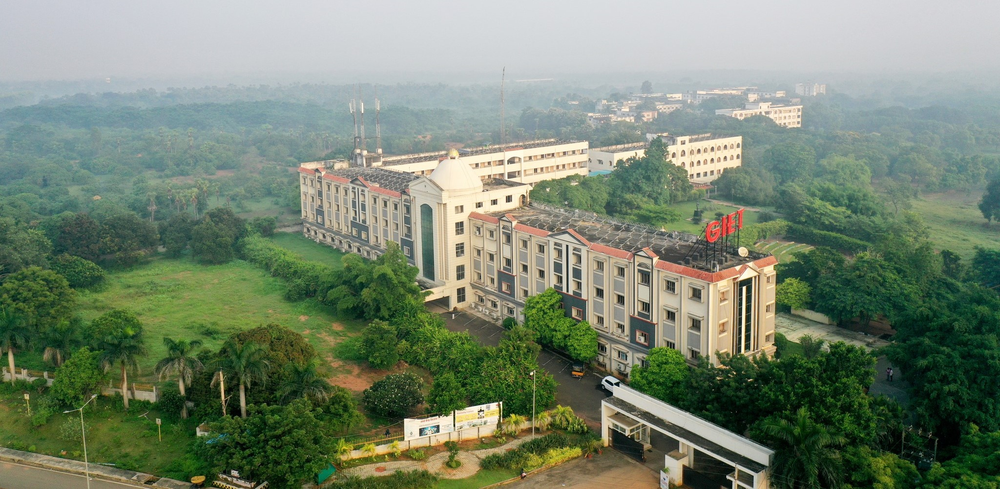

International Conference on Recent Trends in Innovation and Technology
ICRTIT-2024
19-20 April 2024, Rajahmundry, Andhra Pradesh, India

International Conference on Recent Trends in Innovation and Technology
ICRTIT-2024
19-20 April 2024, Rajahmundry, Andhra Pradesh, India
International Conference on Recent Trends in Innovation and Technology
will be held at Godavari Institute of Engineering & Technology(A),
Rajahmundry (AP), India during April 19-20,2024. The objective of this
International conference is to provide opportunities for the Researchers,
Academicians, Industry personnel and students to interact and exchange
ideas, expertise in the current trends and strategies in Information,
Innovation and Communication Technologies. Besides this, the participants
will also be enlightened on the vast avenues, current and emerging
technological developments in the field of Information and Knowledge
Computing and its applications. These will be thoroughly
explored and discussed in the papers with new research results and new
products or concepts are encouraged for submission and presentation.
About GIET(A)
Godavari Institute of Engineering & Technology(A), Rajahmundry (AP).
GIET was established in the year 1998 to offer quality engineering
education. It is located in the serene suburbs of Chaitanya Knowledge
City, Rajahmundry on NH-16, the sprawling 300-acres of GIET campus. GIET
is accredited by NAAC ‘A+’ Grade with CGPA 3.37 and NIRF ranked since 2019
consecutively. It is also recognized by the University Grants Commission
2(f) and 12(B) and is permanently affiliated to Jawaharlal Nehru
Technological University, Kakinada (JNTUK). GIET has collaborations with
many International organizations.
Conference Tracks:
-
Track 1:
Machine Learning and Intelligent Systems
-
Track 2:
IOT and Cloud Computing
-
Track 3:
Sustainable, Renewable Energy Systems and Electric Vehicles
-
Track 4:
Signal Processing, Image Processing and Communication
-
Track 5:
Materials ,Structural and Robotic Engineering
-
Track 6:
Emerging Technologies and Applications
Important Dates:
Paper Submission Deadline: 10th Feb 2024
Notification of Acceptance: 5th Mar 2024
Registration Ends : 15th Mar 2024
Camera-Ready Paper Deadline: 15th Mar 2024
Conference Dates: April 19-20,2024